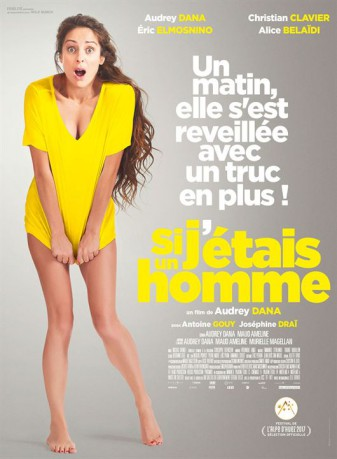

IMDB-Wertung: 4.8 / 10
IMDB-Wertung: 4.8 / 10  Metascore:
Metascore: 
Jeanne wakes up one morning and her life is about to take a funny turn, at first sight nothing has changed in her - to a small detail.
Alternativ: If I were a boy (Englischer Titel)
 IMDB-Wertung: 4.8 / 10 Metascore:
Jeanne wakes up one morning and her life is about to take a funny turn, at first sight nothing has changed in her - to a small detail.
Jahr: 2017
Dauer: 98 Minuten
FSK: 12
Land: Frankreich Studio: Concorde FilmverleihTonspuren: DTS - ,
Untertitel: Deutsch,
Auflösung: 1080p (1920x1040) Größe: 5857 MB
Genre: Komödie
Regisseur: Audrey Dana
Drehbuch: Maud Ameline
Soundtrack:
Darsteller:
 Audrey Dana als Jeanne
Audrey Dana als Jeanne Christian Clavier als Docteur Pace
Christian Clavier als Docteur Pace Eric Elmosnino als Merlin
Eric Elmosnino als MerlinDatei: X:\2017(G-M)\Mein neues bestes Stück (2017, FSK12, 1920x1040).mkv seit 15.11.2017
Festplatte: HD 2017(A-Z)-2018(A-F)
 Es gibt insgesamt 148 Filme in der Gruppe '2017(G-M)'
Es gibt insgesamt 148 Filme in der Gruppe '2017(G-M)'